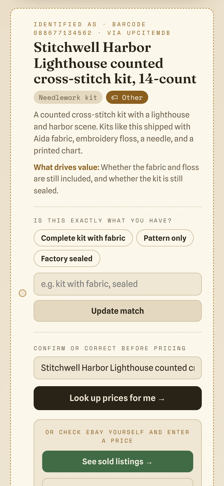
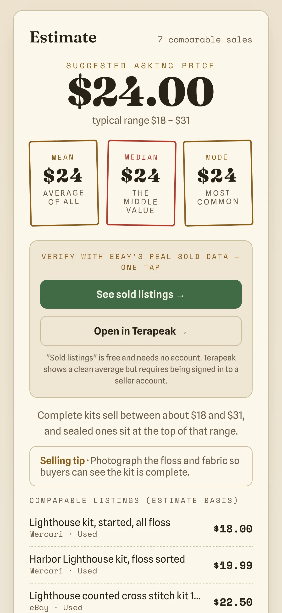
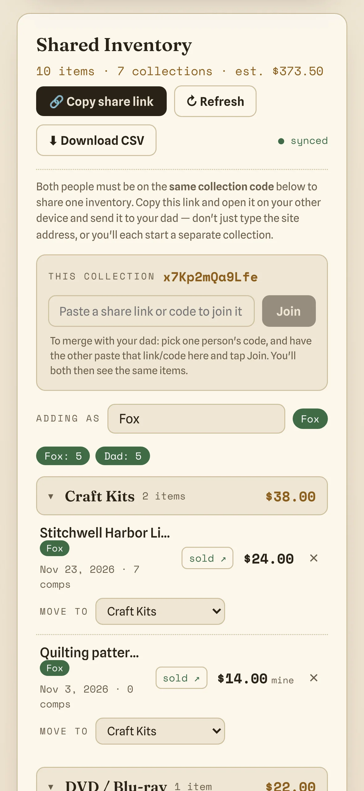
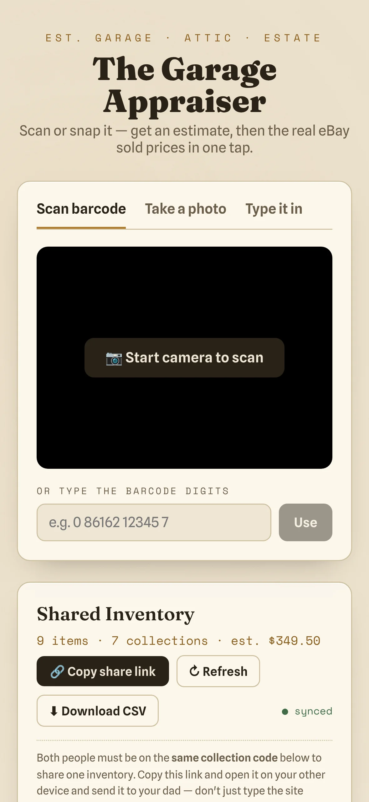
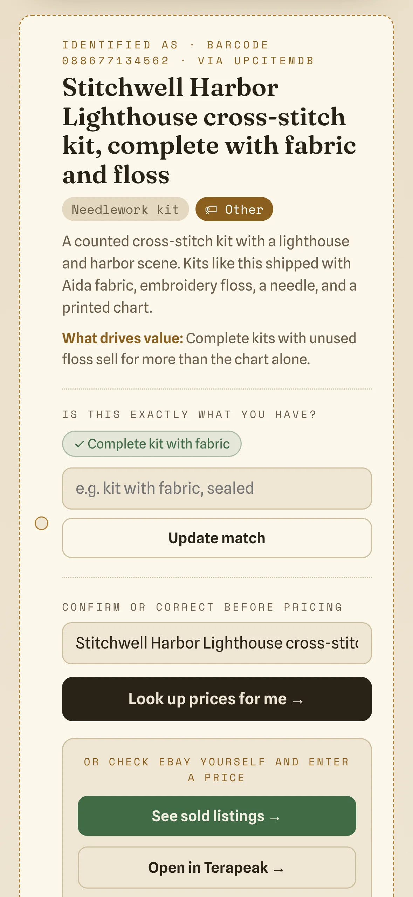
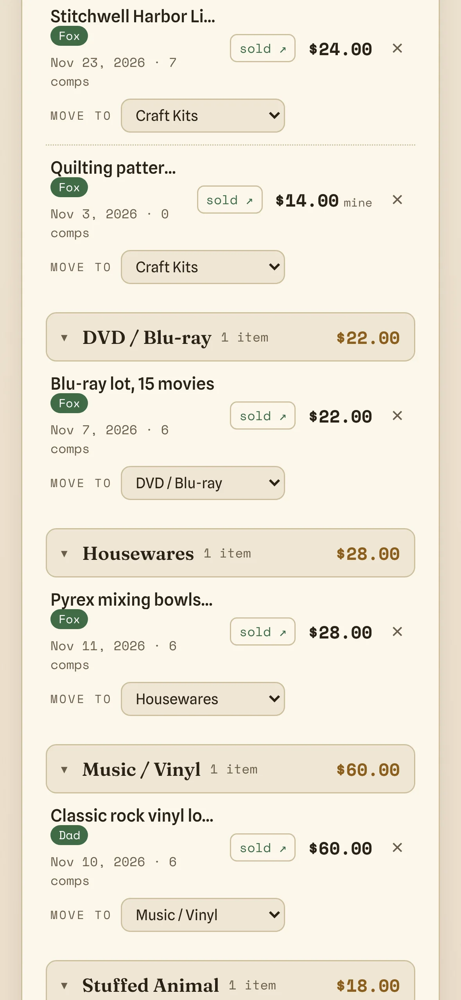

- AI product
- Mobile web app
- Built with Claude Code
Building an AI appraiser for my dad's garage cleanout
I designed and built The Garage Appraiser entirely with Claude. Scan, snap, or type an item, confirm it's the right match, and get a price from recent sales.
There's no public link to the app. Every lookup is billed to my own Anthropic API key, so the screens on this page come from the real app running on sample items.



- My role
- Designer and developer
- Solo project
- Timeline
- June to November 2026
- Still in use
- Built with
- Claude and Claude Code
- No Figma
- Platform
- Mobile web app for iPhone and Android
- Private, no public link
The short version
The challenge
My dad was clearing out a garage full of games, toys, movies, tools, and craft supplies. Pricing each one meant digging through eBay sold listings by hand.
What I did
I designed and built a mobile web app with Claude that identifies an item from a barcode, photo, or description, has him confirm the match, and prices it from recent sales.
The outcome
We've scanned and priced 137 items so far, and 40 of them have sold.
Methods and skills
- Designing in code with AI
- Prompt design
- Human review of AI output
- Cost-aware architecture
- Mobile web
- Iterating from real use
A garage full of stuff and no price tags
My dad was clearing out his garage: video games, Beanie Babies, DVDs, tools, records, and boxes of craft kits. A lot of it was worth something. Finding out what meant typing each item into eBay, filtering to sold listings, and guessing which results matched the thing in his hand.
He needed a phone to do three jobs: figure out what an item is, suggest a fair asking price, and keep a list we could both add to. He isn't a tech person, so every step had to be obvious.
Designed and built entirely with AI
I never opened Figma for this project. I designed in the browser by describing screens and behavior to Claude, testing each version on my phone, and changing what didn't work. The product decisions were still mine: what to show, in what order, and what happens when the AI gets something wrong.
The first version went live in June. Almost everything after that came from watching my dad use it. The November release was built in Claude Code, and its commits are co-authored with Claude.
June 2026
First version
Identify an item from a barcode, photo, or description, then price it with web search
August
Built for two people
iPhone barcode scanning, a shared inventory, automatic collections, smaller photo uploads
October
Free storage
Moved the inventory to a free database and copied every item over
November
Version 1.8
Cheaper lookups, and a way to correct a match before pricing it
How it works
Every item goes through the same three steps. These are screens from the real app running on sample items.

Key decisions
Treat the AI's answer as a draft he confirms
The situation
A kit's barcode often belongs to the pattern alone, and a photo can't tell sealed from opened. Details like these change the price a lot, and the AI can't see them.
What I chose
After naming an item, the app asks "Is this exactly what you have?" and offers up to three versions that sell for different prices. A tap, or a typed detail, runs the match again on a cheap model and treats his answer as fact.
The trade-off
It's one more step before a price. Because it comes before the paid search, a wrong match costs nothing to fix.

Show the math, then send him to real sales
The situation
AI price estimates come from web search results, and they can be off. My dad needed to trust a number enough to list an item at it.
What I chose
The app suggests the median as the asking price, shows the mean, median, and mode with plain labels, and lists every sale it used. One tap opens eBay's sold listings or Terapeak for the same search.
The trade-off
The estimate screen holds more than a single number. It also tells him when a price is worth double-checking.
Spend money only where it changes the answer
The situation
Web searches are the expensive part of every lookup, and the bill grew with every item we scanned.
What I chose
Barcodes go to free databases first. A small, cheap model names the item. The larger model with web search only runs when he taps Look up prices, with a cap of two searches. He can also skip it, check eBay himself, and save his own price.
The trade-off
Prices take one extra tap now, and plenty of items never need one.
Share by link instead of accounts
The situation
We both wanted to add to the same list from our own phones, and my dad wasn't going to make an account.
What I chose
Each inventory lives at a link with a short code. Everyone on that link sees the same list, sets a name once, and every item shows who added it. Items sort into collections on their own, each with a running total.
The trade-off
Anyone with the link can edit the list. Early on, opening the plain site address started a separate list, so I added a Join box and clearer instructions on the screen.

Outcome
- 137items scanned and priced so far
- 40items sold
- 2 searchesat most per price lookup, down from 4
The cleanout is still going, and we're both still adding to the same inventory.
Reflection
What worked
Building straight in code meant my dad was using real screens within days instead of reviewing mockups. His feedback could go into the next version the same day. iPhone scanning, the shared inventory, and collections all shipped in one day in August.
What I'd do differently
I'd plan for cost and sharing from the start. The first version sent every lookup down the most expensive path, and the shared inventory needed a fix once two people were really using it. Both were easy to change in code, but they were product decisions, and I made them late.